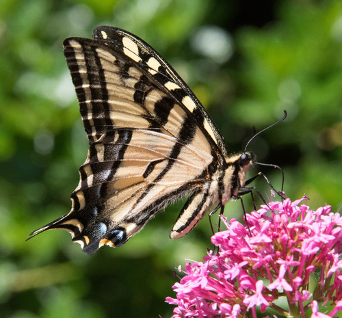

Western Tiger Swallowtail
Papilio rutulus butterfly / moth

Closely related to the Canadian Tiger Swallowtail. Caterpillars feed on willow, cottonwood, and chokecherry.
20 documented plant relationships.
sips nectar at
 Leslie Seaton, some rights reserved (CC BY)") BalsamrootBalsamorhiza sagittata
BalsamrootBalsamorhiza sagittata Matt Lavin, some rights reserved (CC BY)") Big SagebrushArtemisia tridentata
Big SagebrushArtemisia tridentata Boreal YarrowAchillea borealis
Boreal YarrowAchillea borealis Douglas Goldman, some rights reserved (CC BY-SA), uploaded by Douglas Goldman") FireweedChamaenerion angustifolium
FireweedChamaenerion angustifolium Matt Lavin, some rights reserved (CC BY-SA)") RabbitbrushEricameria nauseosa
RabbitbrushEricameria nauseosa Alan Rockefeller, some rights reserved (CC BY), uploaded by Alan Rockefeller") Red ColumbineAquilegia formosa
Red ColumbineAquilegia formosa Douglas Goldman, some rights reserved (CC BY-SA), uploaded by Douglas Goldman") Self-healPrunella vulgaris
Self-healPrunella vulgaris Douglas Goldman, some rights reserved (CC BY-SA), uploaded by Douglas Goldman") Showy MilkweedAsclepias speciosa
Showy MilkweedAsclepias speciosa gwt2102, some rights reserved (CC BY)") Spreading DogbaneApocynum androsaemifolium
Spreading DogbaneApocynum androsaemifolium 2007 Dianne Fristrom, some rights reserved (CC BY-SA)") Tall LarkspurDelphinium glaucum
Tall LarkspurDelphinium glaucum Nick Block, some rights reserved (CC BY), uploaded by Nick Block") Western Blue IrisIris missouriensis
Western Blue IrisIris missouriensis tzeducation, some rights reserved (CC BY), uploaded by tzeducation") Wild BergamotMonarda fistulosaWild MintMentha canadensis
Wild BergamotMonarda fistulosaWild MintMentha canadensis Douglas Goldman, some rights reserved (CC BY-SA), uploaded by Douglas Goldman")
 Tom Norton, some rights reserved (CC BY), uploaded by Tom Norton")
 bobkennedy, some rights reserved (CC BY-SA), uploaded by bobkennedy")
 Harvey Barrison, some rights reserved (CC BY-SA)")
 Douglas Goldman, some rights reserved (CC BY-SA), uploaded by Douglas Goldman")